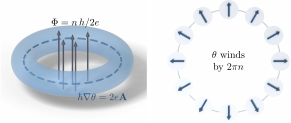

Advanced Quantum Materials 2027 · All lectures · Lecture notes
Session 5. Superconductivity, Nambu Representation and Majorana Physics
5.2 Superconductivity as a macroscopic quantum phenomenon
Before we write the Hamiltonian, let us see why superconductivity is one of the clearest ways that we have to observe quantum mechanics at the macroscopic scale. A superconductor is made of trillions of atoms, and still a measurement on the bulk sample can give, essentially exactly, the microscopic constants \(\hbar\) and \(e\). This works because gauge symmetry breaking gives the many-body wave function a single well-defined phase \(\theta(\mathbf{r})\), and the condition that this phase is single-valued around a closed loop is a very strong constraint.
Let us take a superconducting ring threaded by magnetic flux, or in the same way a hole in a bulk superconductor, and let us take the loop deep enough inside the superconductor that the supercurrent density vanishes there because of Meissner screening. The supercurrent of Cooper pairs, which have charge \(2e\) since a pair is made of two electrons, is proportional to the gauge-invariant combination \(\hbar\nabla\theta - 2e\mathbf{A}\). If we set the current to zero on our loop, we obtain
\[\oint \nabla\theta \cdot d\boldsymbol\ell = \frac{2e}{\hbar}\oint \mathbf{A}\cdot d\boldsymbol\ell = \frac{2e}{\hbar}\Phi.\]
However, \(\theta\) is the phase of a single-valued wave function, so after one turn around the loop it can only change by an integer multiple of \(2\pi\), which means that \(\oint \nabla\theta\cdot d\boldsymbol\ell = 2\pi n\) for integer \(n\). If we combine the two equations, we obtain flux quantization,
\[\Phi = n\,\Phi_0, \qquad \Phi_0 = \frac{h}{2e}. \tag{5.1}\]
Figure 5.1 shows the geometry and the argument based on the winding of the phase. The same physics is behind the precision of Josephson junctions. In the AC Josephson effect, a voltage \(V\) across the junction gives a current that oscillates with frequency \(2eV/h\), which is a direct macroscopic readout of \(h/2e\), and this is possible only because gauge symmetry is broken. Note the parallel with the quantum Hall state from earlier in the course. There, a macroscopic measurement also gives a ratio of the same two constants, which is the Hall conductance, quantized in units of \(e^2/h\) by the Chern number. However, the mechanism is completely different, since it is the quantization of a single-particle topological invariant and not the breaking of a continuous symmetry. In fact, if we combine the two measurements, the flux quantum and the conductance quantum of the Hall effect, we have one of the most precise ways to obtain \(h\) and \(e\) separately. This is a concrete example of the emergence that we keep coming back to in this course, where macroscopic measurements on billions of atoms give us exact microscopic constants.

Experiments find that the trapped flux in a ring comes in steps of \(h/2e\). Which step would (5.1) give if the supercurrent were carried by single electrons of charge \(e\)?
Show the answers
- A. ✗ False
This is false. The loop condition gives the step \(h/q\), so it depends on the charge. For \(q=e\) we get \(h/e\approx4.1\times10^{-15}\) Wb, which is twice the measured \(h/2e\).
- B. ✓ True
This is true. The loop condition gives \((q/\hbar)\Phi=2\pi n\) and the step \(h/q\). For \(q=e\) this is \(h/e\), and the measured step \(h/2e\) then shows that the carriers have charge \(2e\).
- C. ✗ False
This is false. A step \(h/4e\) needs the charge \(q=4e\). A single electron has charge \(e\), and a charge \(e/2\) would give the larger step \(2h/e\), so this choice goes in the wrong direction.
5.3 Zero resistance and the Meissner effect in a superconductor
In the history of the field, superconductivity was discovered through its transport signature. When we cool an ordinary metal, the resistivity goes down smoothly, because there are fewer phonons from which the electrons can scatter. A superconductor instead shows a sudden drop of the resistance to exactly zero at a critical temperature \(T_c\). Below \(T_c\) the resistance stays zero, and not only small. \(T_c\) is the temperature at which gauge symmetry breaking starts. This material appears only on the slides and has no counterpart in the notebook. The schematic of the resistance as a function of temperature and the figure of the field expulsion are shown and described on the slides, but there is no notebook cell for them, since our companion notebook starts from the Hamiltonian and not from transport measurements.
The second signature is the Meissner effect. Above \(T_c\) a metal allows an external magnetic field inside without any problem, but below \(T_c\) the superconductor actively expels the field from its bulk. In type-II superconductors, the only field that remains inside the material is confined to quantized vortices, which are dynamical topological defects of the order parameter of the broken gauge symmetry. Both signatures, zero resistance and the expulsion of the flux, are direct consequences of the same event, which is the condensation of Cooper pairs into a single macroscopic quantum state with a rigid phase that is chosen spontaneously.